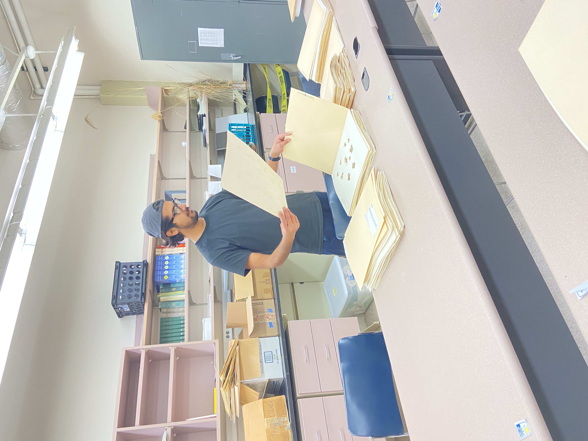

St. Louis, Missouri, United States
Missouri Botanical Garden


Research & Experience
My research interests include plant diversity, genetic resources, phenotypic traits, climatic and environmental variation, horticultural crops, botanical collections, and plant-based research systems.
St. Louis, Missouri, United States
Brookings, South Dakota, United States


Ilam, Nepal